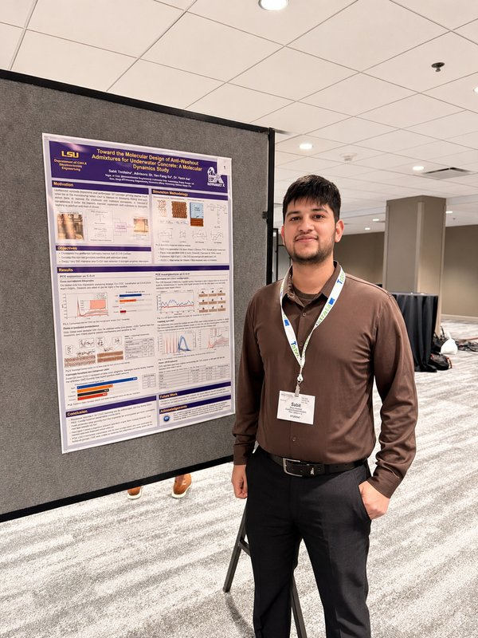

Sabit Timilsina, E.I.T.
Hi, I'm Sabit. I'm finishing my master's in civil engineering (structural) at Louisiana State University, and I'll graduate in December 2026. I got my EIT in Maryland this October.
Before LSU, I did my bachelor's in civil engineering at Pulchowk Campus in Nepal. At LSU I'm a research assistant in Dr. Yen-Fang Su's lab, where I mostly work on concrete materials, and my coursework has been on structural design and analysis. Some of that work is on my projects page.
I'm looking for an entry-level engineering job in structural, bridge, forensic or geotechnical work. I'm based in Baton Rouge and happy to relocate.
Interests
- Design and analysis of concrete structures, including seismic design
- Bridges and prestressed concrete
- Concrete materials, durability and lab testing
Recent
- Oct 2026Got my EIT from the Maryland State Board for Professional Engineers.
- Oct 2026Presented a poster at the ACI Concrete Convention in Atlanta.
- May 2026Joined the organizing committee of the APTEC Gulf Coast Polymer Conference.
- 2026Presented a poster at the LSU Graduate Student Research Conference.
- 2025Co-authored a paper in Soft Matter (details).
Education
M.S. in Civil Engineering (Structural), Louisiana State University, 2025 to 2026 (expected December). GPA 4.14/4.30.
Bachelor's in Civil Engineering, Pulchowk Campus, Institute of Engineering, Tribhuvan University, Nepal, 2018 to 2023.
I'm also a registered civil engineer with the Nepal Engineering Council (2023). In Nepal I studied on a full-tuition merit scholarship after ranking 158 out of about 14,000 in the national engineering entrance exam. Outside class, I was on the organizing committee for the FLOATcrete competition at AADHAR, our civil engineering exhibition, and I led a student team that made bamboo-reinforced concrete beams for the 13th Civil Engineering Exhibition.
Experience
Graduate Research Assistant, Louisiana State University, 2025 to present. UHPC and underwater concrete testing, and molecular dynamics simulations.
Graduate Teaching Assistant, Louisiana State University, spring 2025. CE 3400 Mechanics of Materials.
Research Assistant, Pulchowk Campus, 2024. Porous concrete mix design and testing.
Software
ETABS, SAP2000, STAAD.Pro, OpenSees, Abaqus, AutoCAD, Civil 3D, Revit (basic), Python, MATLAB, QGIS. My CV has the full list.
Contact
Email: sabittimilsina@gmail.com
Phone: (225) 220-9884
LinkedIn: linkedin.com/in/sabittimilsina